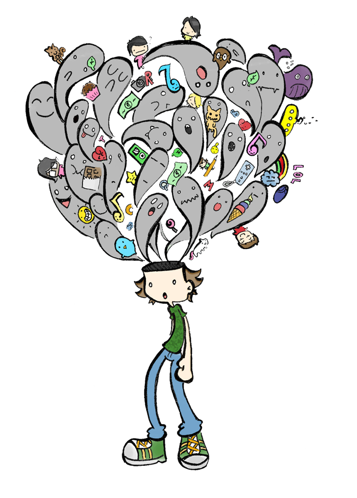
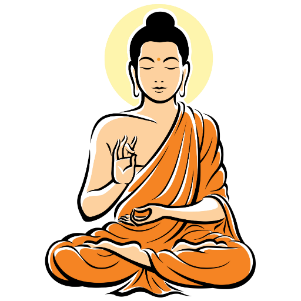

Mindfulness
Mi az a mindfulness?
Biztos volt már veled, hogy egyik nap haza fele menet vagy boltba menés közben feltekintettél az égre és elállt a lélekzeted néhány másodpercre. Egy pillanatra minden gondolatod elszállt és csakis a színes felhőkre valamint a napsugarakra fószuláltál. Viszont pár pillanat után ismét elkezdtek dübörögni a fejedben, hogy mit is kell csináljak, ha hazaérek, mit is kell vennem, ha már ott vagyok a boltban.
A mindfulness egyszerűen azt jelenti, hogy jelen vagyunk a pillanatban és saját akaratunkat arra használjuk, hogy nem a múltban tengődünk vagy éppen a jövőn aggódunk, hanem kielvézzük mind azt ami a mostban történik. Sokan gondolják úgy, hogy nem mindeki tud így gondolkodni és egyfajta természetfeletti képességként tekintenek erre. Viszont a mindfulness nem egy adottság, tehetség amivel csak egyesek rendelkeznek. Mindenkinek a lelke mélyén ott lapul a mindfulness, csak elő kell hozni, fejleszteni és felerősíteni.
Gyakran van úgy, hogy a munkahelyen vagy éppen az iskolában autopilóta üzemmódban vagyunk és nem veszünk nagyon tudomást a környezetünkről vagy akár saját magunkról sem. Ilyenkor el vagyunk veszve a gondolatainkban és ezek a gondolatok egy fesztiválkoncert hangerejével zajongnak a fejünkben. Ezzel szemben a mindfulness segítségével le tudjuk csitítani ezt a vihart magunkban és ismét részt tudunk venni a mostban. Így ha már például egy homokos tengerparton sétálunk nem azon fog pörögni az eszünk, hogy mi történt éppen tegnap, hanem kinyílunk a világ felé, és boldogan hallgatjuk a hullámok csapkodását, érezzük ahogy finoman bekúszik a homok a lábujjaink közé és, hogyan simogatja bőrünket a lemenő nap.
Mi az a meditáció?
A meditáció az, ami segítségével tudjuk gyakorolni a mindfulness-t. Ezt úgy érjük el, hogy a fókuszunkat, jelenlétünket a mostra összpontosítjuk. A meditációra lehet tekinteni edzésként, viszont nem az izmainkat, hanem az elménket erősítjük.
A meditáció egy egyszerű gyakorlat, de az emberek többsége túlkomplikálja. A meditáció hallatára általában az emberek elfordulnak, mert úgy gondolják, hogy erre ők nem képesek, valamint egyfajta szuperképességként kezelik vagy egy fura tevékenységre asszociálnak, amit csak narancssárga törölközőbe csavart furcsa emberek csinálnak a hegyekben a Távol-Keleten.
Sokfajta módszer létezik, amin keresztül lehet gyakorolni, így megtalálhatjuk a hozzánk legjobban illőket. De mindegyiknek van egy közös tulajdonsága, ami nem más mint egy fókuszpont, amire összpontosítunk. Ez lehet egy hang, egy érzés, de leggyakorabban a légzés.

Miért fontos?
Emberi tulajdonság, hogy túlgondolunk dolgokat. Néha azon kapjuk magunkat, hogy egy belső dialógus zajlik bennünk. Egyszerre olyan mintha irányítanánk gondolatainkat, de közben mégsem. Képzeljük el, hogy egy úttest mellett ülünk, ahol az autók a gondolataink. Ha zavar egy gondolat és próbálunk utána futni nem tudjuk azt megállítani vagy megakadályzni. Így amit tehetünk az az, hogy megfigyeljük őket és ítélkezés nélkül haggyjuk, hogy tovább haladjanak.
Ha realizáljuk, hogy a gondolataink nem mi vagyunk, akkor rájövünk, hogy csakis a jelen pillanat létezik. Ha túl sokat azonosulunk velük, akkor a rabjukká válhatunk és átvehetik az irányítást felettünk.
Elsősorban nem azért meditálunk, hogy megtisztítsuk az elménket vagy, hogy abbahaggyjuk a gondolkodást. Azért meditálunk, hogy megtanítsuk magunknak, hogy a gondolataink nem mi vagyunk, azok nem a mi identitásunk.
Rendszeres gyakorlással elérhetjük, hogy a teljes jelenlétünk a mostban legyen. Sok más előnnyel is jár ez a tevékenység, többek között fejleszti a tisztánlátást, a koncentrációt valamint csökkenti a stresszt. Több kutatás bizonyítja a meditáció pozitív hatásait, mint például az erősebb empátiát és pozitív gondolkodást, fejlődött mentális jólétet, csökkentett szorongást és depressziót.
Honnan származik?
Időszámításunk előtt körülbelül 500 évvel származik Indiából, a buddhizmusból. Minden Buddhától származik, aki egy hercegként született a mai Nepál területén.
Apja egy erőteljes vezére volt egy hindu országnak. Volt egy jóslat, hogy a fia egy vallási vezetővé fog válni és rettegett attól, hogy így nem fog a helyébe lépni, mint vezér. Ezért azt csinálta, hogy minden földi szenvedéstől megfosztotta Buddhát: díszes kastélyokban élt, a legszebb ruhákat és ékszereket hordta, azt evett, ivott amit kívánt valamint egy gyönyörű feleséghez ment hozzá. Továbbá az apja elbocsátotta az összes beteg, ronda szolgát és megtiltotta a maradéknak, hogy az élet szenvedéseiről illetve a halálról beszéljenek.
Így Buddha egy nagyon mély elégedetlenséget érzett az életével kapcsolatban, annak ellenére, hogy fényűző életet élt. 29 évesen, amikor végre elmehetett egy kirándulásra, meglátta az élet valódi arcát: kevésbé szép, beteg embereket és hullákat. Ettől lesokkolódott.
Egy másik kirándulás során viszont meglátott egy buddhista remetét, aki minden vagyonát föladva nagyon bölcsnek és boldognak tűnt. Ezután feladta eddigi életét, hogy megtalálja a választ az élet szenvedéseire és egy vándorló remetének állt.
Ez alatt az idő alatt évekig tanult meditálni illetve yogázni az akkoriban élő legnagyobb mesterektől. Majd egy fa alatt egy mély meditáció során rájött valamire. Az egyetlen dolog, ami állandó az a változás és az egyetlen dolog amit tenni lehet az az, hogy el kell ezt fogadni és élvezni kell őket. Valamint, hogy az emberi szenvedést a vágyak okozzák. Így megszabadulva a vágyaktól fel volt töltve együttérzéssel és boldogsággal. Ezzel ő lett az első felvilágosodott ember.
